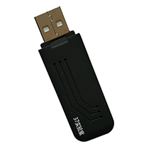
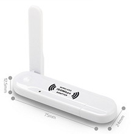
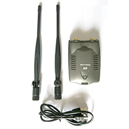
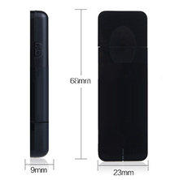
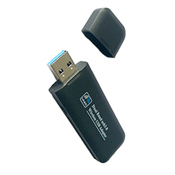
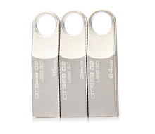
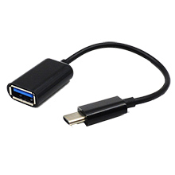

欢迎来到37lab
上方导航栏中是一些常用系统的官方网站链接，左侧索引栏中包含一些基础的系统使用链接和一些常用的在线工具和下载链接，一些比较适用的硬件罗列在下方。所有这些内容会不定期更新。 有什么建议或问题可以联系站长，大家共同进步（QQ：379718363留言即可，不定期查看）。
-

RT3070L无线网卡
监听+注入+AP模式,ubuntu,kali,centos等linux免驱动
49元
-

RT3070L白色小天线
监听+注入+AP模式,ubuntu,kali,centos等linux免驱动
59元
-

RT3070双天线大功率
监听+注入+AP模式,大功率,ubuntu,kali,centos等linux免驱动
89元
-

RT5572双频无线网卡
监听+注入+AP模式,2.4/5GHz双频,多种linux免驱动
89元
-

RTL8812au双频网卡
监听+注入+AP模式,2.4/5GHz双频+USB3.0,kali免驱动
99元
-

linux多系统安装U盘
kali+CDlinux+centos+ubuntu及win7/10等多合一系统
59元
-

手机OTG转接线
多种接口模式,多种线缆长度,支持手机等多种可支持OTG的设备
9.9元
-
密码强度测试
各类hash跑包,密文破解测试,密码强度评估,出结果后再付费
19.9元